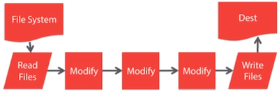

Used to automate workflow of web development. “Swiss Army Knife of Web Development” Quote by Bucky from TheNewBoston.

The plugin takes in files from folders modifies them and then writes the files to destination folder. Pipelines pipe() operator. Plugins can be created and google for popular plugins.
gulp.task - Define tasksgulp.src - Point to files to usegulp.dest - Points to folder to outputgulp.watch - Watch files and folders for changes--save-dev means it will save dependency in our package.json file.
Run npm rm gulp -g to remove any old version of gulp.
Run npm install gulp-cli -g to add gulp as global command interface.
Terminal command line:
$ npm init
Initialize project, creates package.json
$ npm install gulp --save-dev
Install gulp and creates node_modules folder with bunch of dependecies.
Possibly look up why so many dependencies are made .in node_modules, cuz it did not happen to Bucky .in tutorial.
$ npm install gulp-sass --save-dev
Install sass precompiler
gulp <task_name>
Create gulpfile.js file in project directory. An example gulpfile.js file is shown below.
var gulp = require('gulp');
var sass = require('gulp-sass');
/* Template:
gulp.task('task_name', function(){
// do something..
});
/*
-- TOP LEVEL FUNCTIONS --
gulp.task - Define tasks
gulp.src - Point to files to use
gulp.dest - Points to folder to output
gulp.watch - Watch files and folders for changes
*/
// Pipe is chain something together
/*
Returns scss file pipe it through sass and
*/
gulp.task('sass', function(){
return gulp.src('app/scss/styles.scss')
.pipe(sass())
.pipe(gulp.dest('app/css'))
});
The default task means when running just gulp in command line, this is the task that will be executed
/*
Default task
*/
gulp.task('default', async function () {
return console.log('Hello Gulp!');
});
Gulp task to echo to command line.
/*
Need to make function async
*/
gulp.task('message', async function () {
return console.log('Hello Gulp!');
});
/*
Need done argument because it assumes the task is synchronous
*/
gulp.task('message2', function(done){
console.log('Gulp is runninng....');
done();
});
The reason for adding async is because since Gulp Verions 4.0 it is required. Here is a Stackoverflow post explaining why.
Copying a certain type of file to a directory. This example all HTML files in src directory will be copied to dist directory.
// Copy ALL HTML files
// dist folder created automatically
gulp.task('copyHtml', function(){
return gulp.src('src/*.html')
.pipe(gulp.dest('dist'))
});
Run npm install gulp-clean-css --save-dev in command line to install clean-css plugin.
Run npm install gulp-sass -—save-dev in command line to install Sass to CSS compiler plugin.
const sass = require('gulp-sass');
const cleanCSS = require('gulp-clean-css');
gulp.task('sass', function(){
return gulp.src('src/scss/main.scss')
.pipe(sass())
.pipe(cleanCSS())
.pipe(gulp.dest('src/css'))
.pipe(browserSync.stream()); // Also refreshes browser
})
Run $ npm install gulp-imagemin --save-dev in command line to install gulp plugin. Then require it in our gulp file.
const imagemin = require('gulp-imagemin')
// Image optimization
gulp.task('imagemin', () =>
gulp.src('img/*')
.pipe(imagemin())
.pipe(gulp.dest('dist/images'))
);
Run $ npm install gulp-uglify --save-dev
Note: This does not work with ES6 and TypeScript standards, only plain JavaScript.
I am personally not using this one.
const uglify = require('gulp-uglify')
// Javascript minifying
gulp.task('minify', () =>
gulp.src('js/*.js')
.pipe(uglify())
.pipe(gulp.dest('dist'))
);
Run $ npm install gulp-minify --save-dev
Minifies javascript files.
src: main.js -> dest: main.min-js, main.js — Basically source file is copied as well and a new minified is made.
src: main.js -> dest: main.js — Source file isn’t copied and destination is called the same as source file.
const minify = require('gulp-minify')
// Javascript minifying
gulp.task('scripts', () => {
return gulp.src('src/js/*.js')
.pipe(minify({
ext:{
min:'.js' // Destination files will be called the same as source files
},
noSource: true, // Source files are not published
}))
.pipe(gulp.dest('js'))
});
Give the default tasks and array of tasks to execute. gulp.series makes the tasks run in series, one after another.
gulp.task('default', gulp.series('message', 'copyHtml', 'imagemin'));
Run $ npm install gulp-concat --save-dev
Merge all JavaScript files into one and then minify it.
const concat = require('gulp-concat');
// Combine and minify Javascript files
gulp.task('scripts', () =>
gulp.src('js/*.js')
.pipe(concat('main.js'))
.pipe(uglify())
.pipe(gulp.dest('dist'))
);
Watch specific files for changes and if changes occur run some tasks. After setting up watch task, run gulp watch. This will watch the files for changes and apply the tasks when changes occur. Ctrl + C to exit watch.
gulp.task('watch', function(){
// Watch all javascript files and if changes occure run scripts tasks
gulp.watch('src/js/*.js', gulp.series('scripts'));
gulp.watch('src/images/*', gulp.series('imagemin');
gulp.watch('src/scss/*.scss', gulp.series('sass'));
gulp.watch('src/*.html', gulp.series('copyHtml'));
});
Run $ npm install browser-sync --save-dev
Run gulp browser-sync and server starts up on localhost:3000. Ctrl + C to stop server.
Note: Look more into browser sync for auto reload, etc.
const browserSync = require('browser-sync').create();
// Static server
gulp.task('browser-sync', function() {
browserSync.init({
server: {
baseDir: "./"
}
});
});
Run $ npm install babel-core --save-dev
Run $ npm install gulp-babel --save-dev
Run npm install --save-dev @babel/core @babel/preset-env
Run npm install --save-dev babel-preset-es2015
Babel is an Javascript compiler that can compile ES6 standard code (modules, etc) into ES6 standard code.
const babel = require('gulp-babel');
const uglify = require('gulp-uglify');
gulp.task('scripts', () => {
return gulp.src('src/**/*.js')
.pipe(babel({
presets: ['es2015']
}))
.pipe(uglify())
.pipe(gulp.dest('dist'))
});
const gulp = require('gulp');
const sass = require('gulp-sass');
const cleanCSS = require('gulp-clean-css');
const imagemin = require('gulp-imagemin');
const minify = require('gulp-minify');
const inject = require('gulp-inject');
const browserSync = require('browser-sync').create();
const del = require('del');
/*
Need done argument because it assumes the task is synchronous
*/
gulp.task('message', function(done){
console.log('Gulp is runninng....');
done();
});
// Copy ALL HTML files
// dest folder created automatically
gulp.task('copy-html', function(){
return gulp.src('src/*.html')
.pipe(gulp.dest('./'))
});
// Copy ALL js files
// dest folder created automatically
gulp.task('copy-js', function(){
return gulp.src('src/js/*')
.pipe(gulp.dest('js'))
});
// Copy ALL css files
// dest folder created automatically
gulp.task('copy-css', function(){
return gulp.src('src/css/*')
.pipe(gulp.dest('css'))
});
// Copy ALL css files
// dest folder created automatically
gulp.task('copy-files', function(){
return gulp.src('src/files/**/*')
.pipe(gulp.dest('files'))
});
// Image optimization
gulp.task('image-min', () =>
gulp.src('src/img/*')
.pipe(imagemin())
.pipe(gulp.dest('img'))
);
// Javascript minifying
gulp.task('scripts', () => {
return gulp.src('src/js/*.js')
.pipe(minify({
ext:{
min:'.js'
},
noSource: true,
}))
.pipe(gulp.dest('js'))
});
// Pipe is chain something together
/*
Returns SCSS file pipe it through sass and
*/
gulp.task('sass', function(){
return gulp.src('src/scss/main.scss')
.pipe(sass())
.pipe(cleanCSS())
.pipe(gulp.dest('src/css'))
.pipe(browserSync.stream());
});
/*
Inject CSS into HTML
Later also inject Javascript
*/
gulp.task('inject-index', function () {
// var target = gulp.src('./src/index.html');
// // It's not necessary to read the files (will speed up things), we're only after their paths:
// var sources = gulp.src(['./src/css/*.css'], {read: false}, {relative: true} );
// return target.pipe(inject(sources))
// .pipe(gulp.dest('./src'));
// Pipe relative path
return gulp.src('./src/*.html')
.pipe(inject(gulp.src('./src/css/*.css', {read: false}), {relative: true}))
.pipe(gulp.dest('./src'));
});
// Static server
gulp.task('serve', function() {
browserSync.init({
server: {
baseDir: "./src/"
}
});
// Make broswer sync on change in SASS and CSS
gulp.watch("src/scss/*.scss", gulp.series('sass'));
// gulp.watch("src/*.html", gulp.series('inject-index'));
gulp.watch("src/*.html").on('change', browserSync.reload);
gulp.watch("src/js/*.js").on('change', browserSync.reload);
});
// Watch can be called here separately, but it is called when gulp browser sync is started
gulp.task('watch', function(){
// Watch all javascript files and if changes occure run scripts tasks
gulp.watch('src/scss/*', gulp.series('sass'));
//gulp.watch('src/*.html', gulp.series('copy-html'));
});
/* Copy all files in dist folder to project folder */
gulp.task('copy-dist', function(){
return gulp.src('dist/**/*')
.pipe(gulp.dest('./'))
});
gulp.task('clean', function(){
return del(['js', 'css', 'img', 'files', 'index.html', 'favicon.ico'], {force:true});
});
gulp.task('deploy', gulp.series('clean', 'copy-dist'));
gulp.task('default', gulp.series('image-min', 'sass', 'scripts', 'inject-index', 'copy-html', 'copy-css', 'copy-files'));
const gulp = require('gulp');
const imagemin = require('gulp-imagemin');
const del = require('del');
const exec = require('child_process').exec;
const jsonminify = require('gulp-jsonminify');
/*
Need done argument because it assumes the task is synchronous
*/
gulp.task('message', function (done) {
console.log('Gulp is running....');
done();
});
/* Run `npm run build` command inside gulp */
gulp.task('build', function (cb) {
exec('npm run build', function (err, stdout, stderr) {
console.log(stdout);
console.log(stderr);
cb(err);
});
});
/* Minify JSON files */
gulp.task('minify-json', function () {
return gulp.src(['dist/database/*.json'])
.pipe(jsonminify())
.pipe(gulp.dest('dist/database/'));
});
// Copy ALL files
// dest folder created automatically
gulp.task('copy-files', function () {
return gulp.src('src/files/**/*')
.pipe(gulp.dest('files'))
});
// Image optimization
gulp.task('image-min', () =>
gulp.src('src/img/*')
.pipe(imagemin())
.pipe(gulp.dest('img'))
);
/* Copy all files in dist folder to project folder */
gulp.task('copy-dist', function () {
return gulp.src('dist/**/*')
.pipe(gulp.dest('./'))
});
gulp.task('clean', function () {
return del(['js', 'css', 'img', 'files', 'database', 'index.html', 'favicon.ico'], {
force: true
});
});
gulp.task('deploy', gulp.series('build', 'minify-json', 'clean', 'copy-dist'));